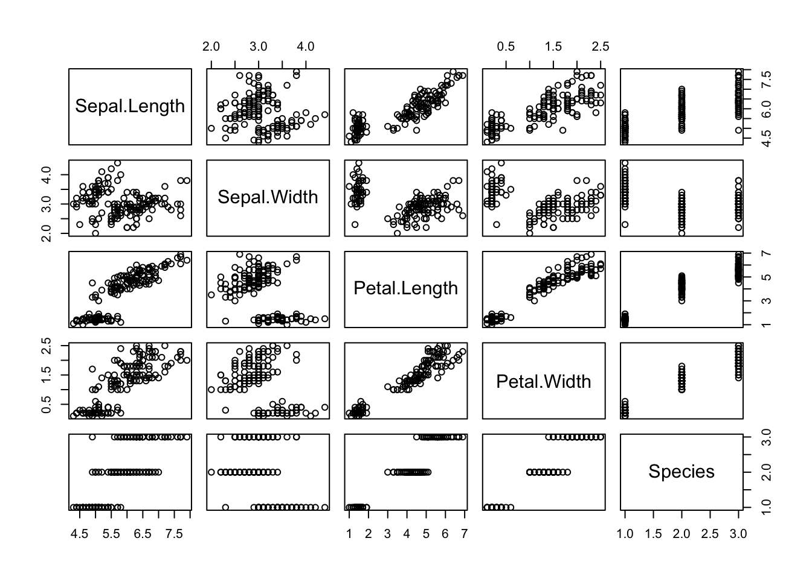

Data Visualization
Module 1: Data Visualization in Base R
28 Jan 2024
Materials
Script
Click here to download the script! Save the script to the scripts folder (R Project folder).
Load your script in RStudio. To do this, open RStudio and click the files window and select the scripts folder and then this script.
Let’s get started plotting!
Read data
We’ll start with the ‘trees’ dataset, which is built into R. It describes the girth, height, and volume of 31 felled black cherry trees.
# Data ----------------------
# look at description of built in dataset
?trees
# Show the structure of the trees dataframe
str(trees) ## 'data.frame': 31 obs. of 3 variables:
## $ Girth : num 8.3 8.6 8.8 10.5 10.7 10.8 11 11 11.1 11.2 ...
## $ Height: num 70 65 63 72 81 83 66 75 80 75 ...
## $ Volume: num 10.3 10.3 10.2 16.4 18.8 19.7 15.6 18.2 22.6 19.9 ... # Show the first few observations of the trees dataframe
head(trees) ## Girth Height Volume
## 1 8.3 70 10.3
## 2 8.6 65 10.3
## 3 8.8 63 10.2
## 4 10.5 72 16.4
## 5 10.7 81 18.8
## 6 10.8 83 19.7Basic plots
While we will spend most of today focusing on using ggplot2 (a very powerful data visualization package in the tidyverse), you don’t always need publication quality graphs and for simple data exploration it can be quicker to know how to make plots in base R.
R’s basic “plot()” function takes an “x” argument (defining coordinates on an x axis) and a “y” argument (defining coordinates on a y axis).
Here is an example of a scatterplot in R:
# Basic plotting ----------------------
plot(x = trees$Girth, y = trees$Volume) # use R's built-in "trees" dataset: ?trees
# or
plot(trees$Girth, trees$Volume) Remember the
$in base R refers to a specific column in the dataset and that we don’t have to specify ‘x =’ and ‘y=’.
Change Plot Type
Because we’re exploring different ways of plotting, it may be useful
to look at different plot types.The default plot type for two
quantitative variables is points (classic scatterplot), but you can
change it to lines or both points and lines (or others) by using the
type= option
# line graph
plot(trees$Girth, trees$Volume,
type = "l") # linesUse the help shortcut in your console to look up what other types of plots you can specify in the plot argument. (Hint don’t forget to specify which package)
# ?base::plotViewing multiple plots at once
It can also be useful to include multiple plots in the same image.
We can do this using the par() function (graphical
parameters), which has arguments that control just about every aspect of
a plot in R.
# Viewing multiple plots ----------------------
?par
par() # view the default graphical parameters (can be kind of overwhelming!)We could change the “mfrow” parameter from c(1,1) to c(2,2): this means that we can fit four plots into a single window.
# change plotting window
# specify graphical parameters
par(mfrow=c(2,2))
# create plots to fill plotting window
plot(trees$Girth,
trees$Volume) # point
plot(trees$Girth,
trees$Volume,
type="l") # lines
plot(trees$Girth,
trees$Volume,
type="b") # both
plot(trees$Girth,
trees$Volume,
type="o") # both with connected linesAn even easier solution is to use the convenience function
layout(). An example using layout() is
below.
# layout
# Use "layout" to define a 2 row x 2 column matrix with elements 1, 2, 3, and 4.
# This divides the image into four sections and then fills these with the plot function
layout(matrix(1:4, nrow=2, ncol=2))
# create plots to fill plotting window
plot(trees$Girth,
trees$Volume) # point
plot(trees$Girth,
trees$Volume,
type="l") # lines
plot(trees$Girth,
trees$Volume,
type="b") # both
plot(trees$Girth,
trees$Volume,
type="o") # both with connected linesWhenever you use layout() or par(), the
graphics window will retain this layout for all future plots. To start
over (and return to the default graphical parameters), use
graphics.off() to reset the plot. For example:
plot(trees$Girth,
trees$Volume) ## The plot is still in 4 parts
graphics.off() ## now the plot is reset!Change Plot Symbol
We can also change the type of points used when plotting using the
pch= option. For example, we plot three different shape
options below:
# Plot symbols ----------------------
# Use layout to define a 3 row x 1 column matrix with elements 1, 2, and 3.
# This divides the image into three sections and then fills these with the plot function
layout(matrix(1:3,
nrow = 3,
ncol = 1))
# pch: 'plotting character' changes the type of point that is used (default is an open circle)!
plot(trees$Girth,
trees$Volume,
pch = 19) # filled point
plot(trees$Girth,
trees$Volume,
pch = 2) # open triangle
plot(trees$Girth,
trees$Volume,
pch = 11) # starYou might want to remember a couple favorites (for example, I like to use pch = 19). Alternatively, you might consider saving a useful guide like this:

Histograms
We can also use base R to create histograms, which are useful for exploring data and checking assumptions of normality for statistical analysis.
# Histograms ----------------------
layout(matrix(1:2, 1, 2))
## y-axis is in counts by default (total observations in each "bin")
hist(iris$Sepal.Length,
main = "Histogram of Sepal Length",
xlab = "Sepal Length")
## change y-axis to proportions of the entire dataset using freq=FALSE
hist(iris$Sepal.Length,
freq = FALSE,
main = "Histogram of Sepal Length",
xlab = "Sepal Length")Plot matrices
Plot
Alternatively you can also plot all columns of a dataset in a matrix
using the plot() function with your
dateset inside the ()
# Plotting matrices ----------------------
plot(iris)
Pairs
The pairs() function allows for quick investigation into
relationships between variables. Be careful if your data set is large
(e.g., lots of columns), as this can be a slow function.
# quick invesrtigation of relationship between variables
pairs(iris)
Correlelogram (correlations)
Another useful thing to know how to do is to create a correlelogram or a matrix depicting correlations between variables in a dataset. I used to copy and paste a super long confusing code from base R to do this but recently found that a package PerformanceAnalytics has a easy to use function that will do this for you from the link below.
Install the PerformanceAnalytics package and load it to your library.
# create correlation matrix for numeric variables in the iris data
chart.Correlation(iris[,1:4],
histogram = TRUE,
method = "pearson")More links
We didn’t cover a lot for plotting in base R because I find ggplot2 to be much more flexible and user friendly, but if you need to create or adapt a plot in base R here are a few helpful links that could get you started
UC Business Analytics R
Programming Guide - All Graphics in R
Towards
Data Science - Base Plotting in R